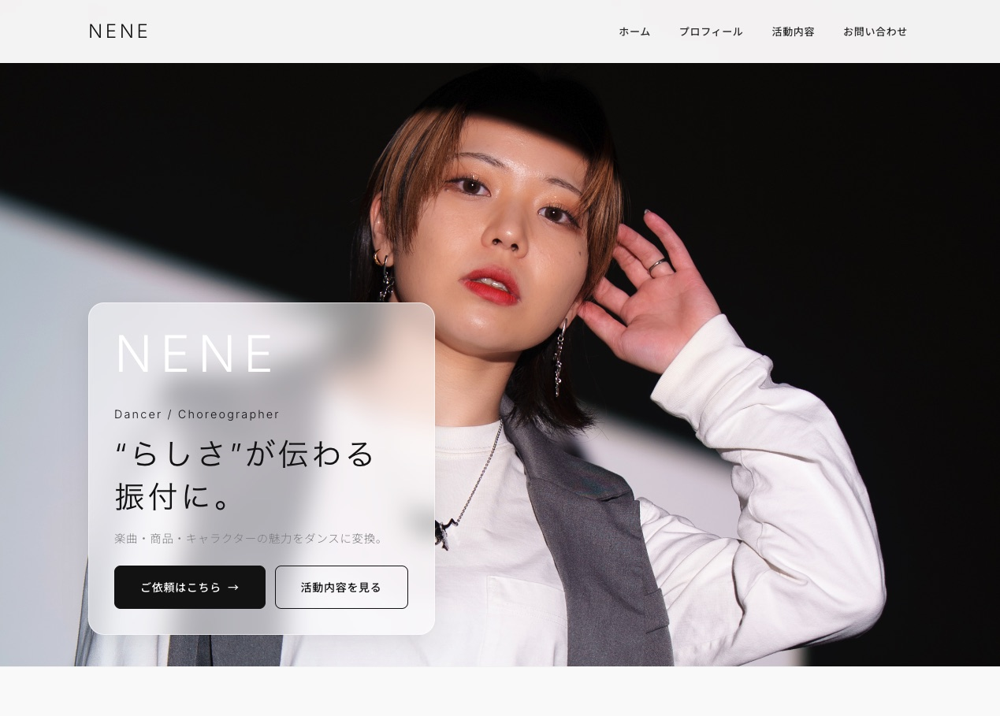
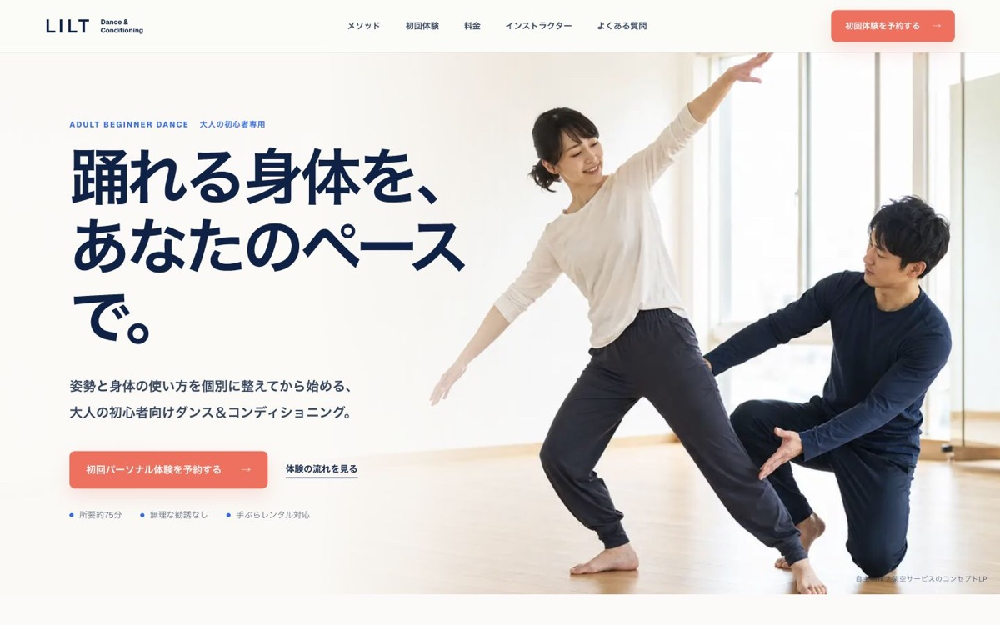
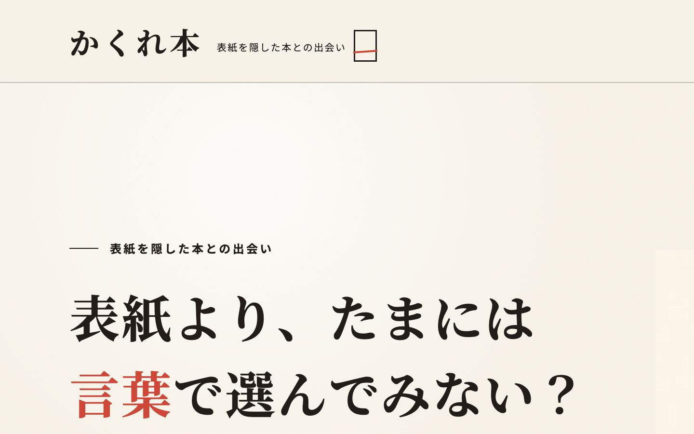

実案件｜公開中
NENE LP
振付師・ダンサーの活動と依頼方法を、初めて見る人にも順番に伝わるLPへ整理しました。
- 課題
- 活動内容、実績、依頼方法が分散し、依頼者が全体像をつかみにくい状態でした。
- 対応
- プロフィール、実績、サービス、問い合わせ導線を1ページにまとめ、スマートフォンでも迷わない構成を設計しました。
- 担当
- 構成設計／コピーライティング／Webデザイン／レスポンシブ実装
まだ言葉になっていない魅力を、問い合わせにつながるLPへ。
個人・小規模事業者向けに、ヒアリングからコピー、構成、デザイン、実装まで担当します。
内容や予算が決まっていない段階でも大丈夫です。
通常2〜3営業日以内に返信します。
Works
ヒアリングから始め、言葉の設計、デザイン、実装まで一貫して制作しています。

実案件｜公開中
振付師・ダンサーの活動と依頼方法を、初めて見る人にも順番に伝わるLPへ整理しました。

自主制作｜サンプルLP
ダンス初心者や運動に不安を持つ人が、安心して一歩を踏み出せることを目指したダンススタジオLPのサンプルです。不安や疑問を順番に解消し、体験レッスンの申込みまで迷わず進める情報設計を意識して制作しました。

自主制作｜サンプルLP
表紙やタイトルではなく、3つの言葉を手がかりに本を選ぶ架空の書店キャンペーンLPのサンプルです。コンセプト、コピー、情報設計、画面構成、PC／スマホ実装まで一貫して制作しました。
※実在する書店キャンペーンではありません。
Copy & Brand Language
掲載許可・採用区分を確認できていないため、企業名を伏せ、提案内容のみ掲載しています。
提案例｜匿名掲載
長く続く歴史だけでなく、日々の食卓に届けたい価値まで伝わる言葉へ整理しました。
キャッチコピー／ブランドステートメント／思想整理提案例｜匿名掲載
経営者の思想と将来像を、社内外で共有できるタグラインとMission・Vision・Valueへ展開しました。
ヒアリング／タグライン／MVV提案例｜匿名掲載
価格だけに寄せず、地域で相談しやすい事業者として伝わるファーストビューと導線を設計しました。
競合分析／ターゲット整理／LPコピーServices
言葉・デザイン・LPなど、目的に合わせて必要な範囲を組み合わせます。

サービスの核と選ばれる理由を整理し、自分の言葉で説明できる状態へ整えます。
こんな方へ強みや発信の軸が定まっていない方。
完成するものキャッチコピー、ボディコピー、ブランドステートメント、MVV。

伝える順番からコピー、デザイン、実装までをつなぎ、公開できる1ページへ仕上げます。
こんな方へ原稿や構成が未整理な段階から相談したい方。
完成するもの構成、コピー、Webデザイン、レスポンシブ実装。

散らばった活動や実績を棚卸しし、媒体をまたいで一貫して伝わる導線を作ります。
こんな方へ発信内容と問い合わせまでの導線に迷っている方。
完成するもの実績の整理軸、プロフィール文、発信テーマ、SNS・note導線案。
相談ボタンを押すと、問い合わせフォームの希望サービスへ自動で反映されます。料金は料金の目安で確認できます。
Before You Ask
準備が整っていなくても、状況を確認しながら制作範囲を整理します。
箇条書きや断片的なメモから、サービスの魅力と誰に何を伝えるかを一緒に整理します。
LPに何を載せるか決まっていない段階から、読み手が理解しやすい情報の順番を作ります。
文章、構成、デザイン、実装を分断せず、相談時の意図がぶれない形へ整えます。
スマホ表示、問い合わせ導線、更新のしやすさまで確認し、公開または納品します。
Process
最初から発注を決める必要はありません。方向性と見積もりを確認してから制作へ進みます。
箇条書きで構いません。作りたいものと今の悩みをフォームからお送りください。
目的、対象者、必要な素材を確認し、制作範囲・料金・納期を見積もりで共有します。
確認いただく初稿を作成し、言葉と見た目を一緒に調整します。初稿を完成品扱いにはしません。
文章、スマホ表示、リンク、フォームを確認し、合意した方法で公開または納品します。
Price
必要な範囲を選びやすいよう、単品メニューとセットに分けています。
キャッチコピー10案と、方向性を合わせる修正1回を含みます。
サービスの価値や背景を、読み手に伝わる本文へ整理します。
Mission・Vision・Valueを、活動の判断軸として使える言葉へ整えます。
ページ構成に沿って、見出し・本文・CTAなどの原稿を作成します。
見積もりで確認する項目
フォーム実装、画像・文章素材の準備範囲、修正回数、公開作業、納期、サーバー・ドメイン費、税区分は、要件確認後に見積書で明示します。
フライヤー、SNS画像、サムネイル、動画編集など、Web制作に付随する制作も内容に応じてお見積もりします。
迷う場合は、フォームで「まだ決まっていない」を選んでください。必要な範囲から一緒に整理します。

About
Kai Creative Worksは、言葉がまだまとまっていない個人・小規模事業者のために、コピーから公開できるLPまで一人で整える制作サービスです。
見た目から作り始めるのではなく、誰に、何を、どんな順番で伝えるかを整理してから構成とデザインへ進みます。窓口と制作者が同じため、相談時の意図を実装までつなげやすいことが特徴です。
FAQ
はい。断片的なメモや箇条書きからでも、ヒアリングを通して必要な情報と伝える順番を整理します。
はい。目的や現状を伺い、必要な制作物と優先順位から一緒に整理します。
はい。イベント告知、活動紹介、ポートフォリオ、サービス紹介など、小規模な1ページLPを中心に対応しています。
制作内容、文章量、素材の有無、ページ数、実装範囲を確認し、着手前にお見積もりをご案内します。
情報整理や構成・実装の補助として必要に応じて活用します。企画、表現判断、コピーの選定、修正、最終確認は制作者本人が行います。
クライアントからお預かりした機密情報や個人情報を、事前確認なく外部AIサービスへ入力することはありません。
言葉の整理、コピー、構成、デザイン、HTML・CSS・JavaScriptによる実装、公開前確認まで、必要な範囲に合わせて対応します。
はい。LPやブランドの軸をもとに、SNS投稿やnoteへ展開するためのテーマ、見出し、導線整理をご相談いただけます。
Contact
作りたいもの、今困っていることを、箇条書きでお送りください。
必要な範囲を一緒に整理し、通常2〜3営業日以内を目安にご返信します。